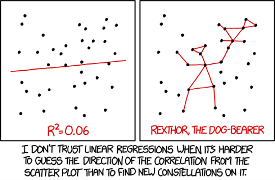
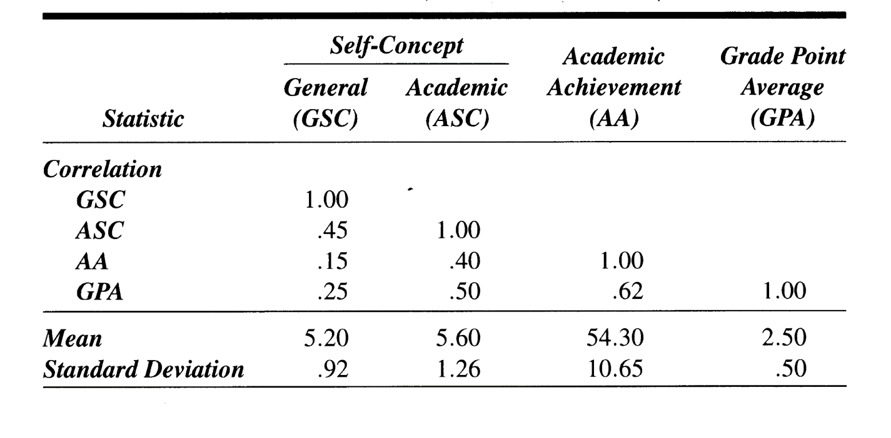
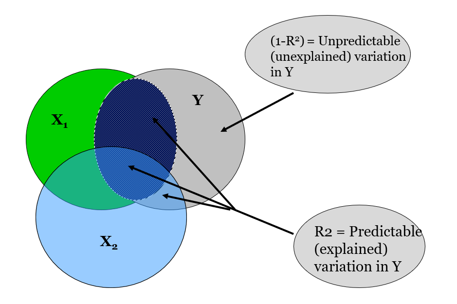
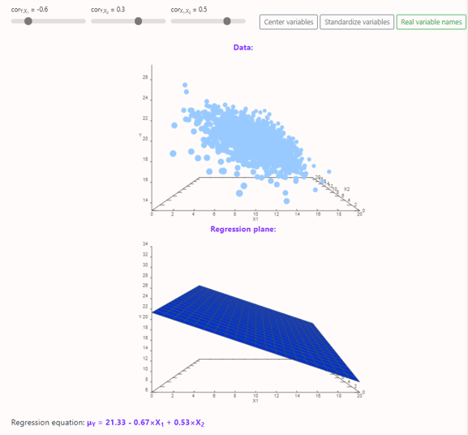
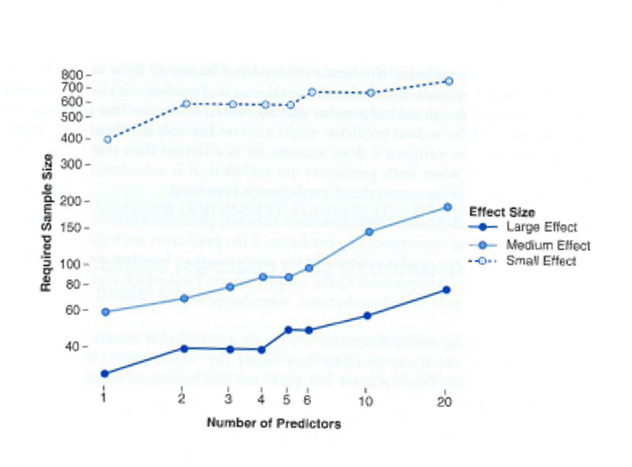

Introduction

Outline
What we will cover today:
- Simple vs Multiple Regression
- Multiple Regression
- Beta coefficients (standardized)
- Comparing models
- Entry methods
Quiz
add
Simple vs. Multiple Regression
Simple Regression
\[Y_i=b_0+b_iX_i+\epsilon_i\]
- \(b_i\)
- Regression coefficient for the predictor
- Gradient (slope) of the regression line
- Direction/strength of relationship
- \(b_0\)
- Intercept (value of Y when X = 0)
- Point at which the regression line crosses the Y-axis (ordinate)

Simple vs. Multiple Regression
Simple
\[Y_i=b_0+b_iX_i+\epsilon_i\]
- One dependent variable Y predicted from one independent variable X
- One regression coefficient
- \(R^2:\) proportion of variation in dependent variable Y predictable from X
Multiple
\[Y_i=b_0+b_1X_2+b_2X_2+ ...+b_nX_n+\epsilon_i\] - One dependent variable Y predicted from a set of independent variables (\(X_1, X_2, …X_k\)) - One regression coefficient for each independent variable - \(R^2:\) proportion of variation in dependent variable Y predictable by set of independent variables (X’s)
Multiple Regression Analysis (MRA)
- Method for studying the relationship between a dependent variable and two or more independent variables.
- An equation based model of the data
- Purposes:
- Prediction
- Explanation
- Theory building

Assumptions
- Independence: the scores of any particular subject are independent of the scores of all other subjects
- Normality: in the population, the scores on the dependent variable are normally distributed for each of the possible combinations of the level of the X variables; each of the variables is normally distributed
- Homoscedasticity: in the population, the variances of the dependent variable for each of the possible combinations of the levels of the X variables are equal.
- Linearity: In the population, the relation between the dependent variable and the independent variable is linear when all the other independent variables are held constant.
- Multicollinearity: Two predictors should not be too highly correlated (.8 or .9).
Example: Self Concept and Academic Achievement (N=103)

Shavelson, Text example p 530 (Table 18.1) (Example 18.1 p 538)Proportion of Predictable and Unpredictable Variation
- Where:
- Y= AA
- \(X_1\) = ASC
- \(X_2\) =GSC

Example: The Model
\[Y_i=b_0+b_1X_2+b_2X_2+ ...+b_nX_n+\epsilon_i\] - The b’s are called partial regression coefficients
- Our example-Predicting AA:
- \(Y_i = 36.83 + (3.52)X_{ASC} + (-.44)X_{GSC}\)
- Predicted AA for person with GSC of 4 and ASC of 6
- \(Y_i = 36.83 + (3.52)(6) + (-.44)(4) = 56.23\)
Various Significance Tests
- Testing \(R^2\)
- Test \(R^2\) through an F test
- Test of competing models (difference between R2) through an F test of difference of \(R^2\)s
- Testing b
- Test of each partial regression coefficient (b) by t-tests
- Comparison of partial regression coefficients with each other - t-test of difference between standardized partial regression coefficients (\(\beta\))
Comparing Partial Regression Coefficients
- Which is the stronger predictor? Comparing \(b_{GSC}\) and \(b_{ASC}\)
- Convert to standardized partial regression coefficients (beta weights, \(\beta\)’s)
- \(\beta_{GSC} = -.038\)
- \(\beta_{ASC} = .417\)
- On same scale so can compare: ASC is stronger predictor than GSC
- Beta weights (\(\beta\)’s ) can also be tested for significance with t tests.
Different Ways of Building Regression Models
- Hierarchical: independent variables entered in stages (based on theory)
- Simultaneous Forced Entry: all independent variables entered together
- Stepwise: independent variables entered according to some order
- By size or correlation with dependent variable
- In order of significance
Visualizing the Regression Plane

Multiple Regression in R
Multiple Regression in R
- Still use
lm()but we just add more variables into the equation - Need to use
lm.beta()from QuantPsyc package for standardized Beta coefficients - Confidence intervals using
confint()

Run a regression on Album sales 2 data
- Load the Album Sales 2.dat file into R.
- Generate descriptive statistics for the data and interpret them
- Make (and save) a simple linear model predicting albums sales from advertising
- Interpret the output
- Make (and save) a multiple regression model prediction albums sales from advertising and airplay
- Generate beta estimates and confidence intervals for your b/beta estimates using
confint() - Interpret the results
Load the Album Sales 2.dat file into R
- Generate descriptive statistics for the data and interpret them
# your code herealbumsales2<-read.delim(file="Album Sales 2.dat",header=TRUE)
psych::describe(albumsales2)#generate descriptives statistics
cor(albumsales2)#storeMake (and save) a simple linear model predicting albums sales from advertising
albumsales.1<-lm(sales~adverts,data=albumsales2)
summary(albumsales.1)#store- Interpret the output
Make (and save) a multiple regression model prediction albums sales from advertising and airplay
#Run a multiple linear regression model
albumsales.2<-lm(sales~adverts+airplay,data=albumsales2)
summary(albumsales.2)#storeGenerate beta estimates and confidence intervals for your b/beta estimates using confint()
#Generate confindence intervals for the model
confint(albumsales.2)#store- Interpret the results
We want to know which b estimate is strongest
- Generate standardized beta coefficients for your multiple regression model using
lm.beta()from QuantPsyc package - Generate confidence intervals for the standardized estimates using
confint()
Generate standardized beta coefficients
- Use
confint()
#Generate confindence intervals for the model
confint(albumsales.2)#storeGenerate confidence intervals for the standardized estimates
- Use
lm.beta()from QuantPsyc package
#Generate confindence intervals for the model
confint(albumsales.2)#storeComparing models
Comparing model fit
- We often want to know if the model with more variables is better, because parsimoniously modeling is preferred
- Using anova (model 1, model 2)
- Comparing AIC the Akaike Information Criterion using extractAIC()
- Smaller AIC values are better
- Root mean square error using performance() from performance package
- Square root of the variance of the residuals (an absolute measure of fit)
- Useful for models with aim of prediction
- Smaller is better
\[R^2 = 1-\frac{SS_{residuals}}{SS_{total}}\] \[Adjusted R^2 = 1-\frac{\frac{SS_{residuals}}{n-K}}{\frac{SS_{total}}{n-1}}\]
Exercise: Lets compare the models
- Compare your two models and see if the second one improved the fit using the
anova()function- F test here tells you if there is a difference in fit of the data by the two models
- Check out the AIC using
extractAIC() - Now do a quick global assessment of model assumptions using
gvlma() - Or try plot(
compare_performance(mod1, mod2)) from performance package
Compare your two models and see if the second one improved the fit using the anova() function
- F test here tells you if there is a difference in fit of the data by the two models
#Compare the improvement of fit for the models
anova(albumsales.1,albumsales.2)#storeCheck out the AIC using extractAIC()
extractAIC(albumsales.1)
extractAIC(albumsales.2)#storeDo a quick global assessment of model assumptions using gvlma()
# quick global analysis of assumptions
require(gvlma)
check_model(albumsales.2)
gvlma(albumsales.2)#storeTry plot(compare_performance(mod1, mod2)) from performance package
#Require # Use the performance package to compare the fit of the two models
performance::compare_performance(albumsales.1,albumsales.2)
plot(performance::compare_performance(albumsales.1,albumsales.2))#storeEntry methods
Different Entry Methods in R
- We’ve been using hierarchical method
- Can do stepwise with s
tepAIC()function from MASS package - ‘backward’ – puts all variables in model and sees if AIC is lowered by removing variables
- Preferable option*
- ‘forward’ – enters variables one at a time and tests if the model is improved

Exercise: Try out the stepwise model
- First create (and save) a new model that has all predictors in the data
- Then save a new model using the
stepAIC()from the MASS package on that model and specify the direction - Use your-model-name-here$anova to get the results
Create a new model that has all predictors in the data
#creaete variable albumsales4albumsales.4<-lm(sales~adverts+airplay+attract,data=albumsales2)#storeSave a new model using the stepAIC() from the MASS package on that model and specify the direction
- Use your-model-name-here$anova to get the results
albumsales.5<-MASS::stepAIC(albumsales.4,direction='backward')
albumsales.5$anova#storeEvaluate and compare the final model to the last model
- Look at the summary of this model with all variables and interpret them
- Generate standardized beta estimates and CIs
- Compare this last model that includes all the variables to the one with only two of the predictors
- Do check of the assumptions of the model both visual and with gvlma
Look at the summary of this model with all variables and interpret them
summary(albumsales.5)#storeGenerate standardized beta estimates and CIs
- Compare this last model that includes all the variables to the one with only two of the predictors
#Generate confindence intervals for the model
confint(albumsales.5)
#Standardizing the coefs
QuantPsyc::lm.beta(albumsales.5)
#or we can standardize the variables
albumsales.5<-lm(scale(sales)~scale(adverts)+scale(airplay)+scale(attract),data=albumsales2)
summary(albumsales.5)
confint(albumsales.5)#storeCompare this last model that includes all the variables to the one with only two of the predictors
gvlma(albumsales.5)
performance::check_model(albumsales.5)#storeExtra code
#store